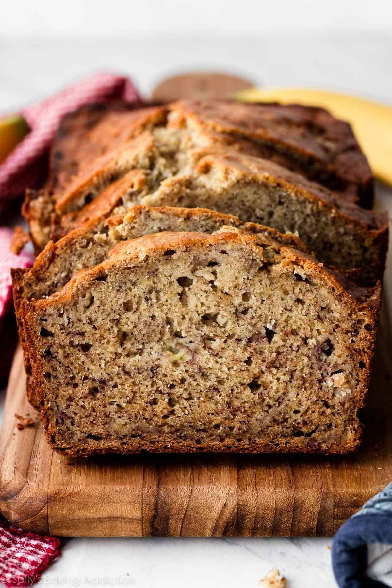

>
Banana Bread
Banana Bread

Description
This is a wonderful, easy to bake sweet quick bread. It has been a staple in my family for as long as I can remember.
Ingredients
- 1 cup sugar
- 1/4 cup butter, softened
- 2 eggs
- 3 medium mashed ripe bananas
- 1 teaspoon vanilla
- 1/3 cup water
- 1-2/3 cup all purpose unbleached flour
- 1 teaspoon baking soda
- 1/2 teaspoon salt
- 1/4 teaspoon baking powder
- 1/2 cup chopped nuts (optional)
Steps
- Preheat oven to 350 degrees. Grease bottom of loaf pan.
- Combine sugar and butter in large bowl.
- Mic in eggs until well blended.
- Add bananas and water and blend together.
- Stir in remaining dry ingredients until moistened.
- Bake for 50-60 minutes. Cool 10 minutes.
- Loosen sides of loaf pan and remove from pan. Cool completely before slicing.